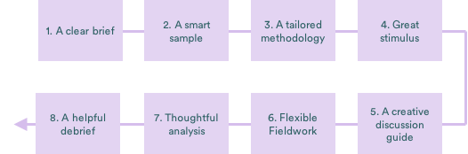

What is creative development research?
Simply put, 'creative development research' is research that supports the development of a creative idea – a new product, media content or campaign activity. It is mostly qualitative, though occasionally more quantitative methods are used as additional tools.
It’s helpful to think of creative development research as different from the other types of qualitative research that GE do, in particular ‘formative research’. Of course, there are some fundamental similarities between the two types of research: in both cases, we are seeking to understand the audience’s point of view as fully and honestly as possible - to see the world through their eyes so that we can make media and messages that are relevant and engaging.
However, there are some important differences. Creative development research often requires a different mind-set, set of tools or different application of methods, as shown on the following page.
“A distinction between formative and creative development research is important as each requires a slightly different set of skills or way of looking at research.” - Qualitative Researcher
Creative development research is designed to support a creative idea…
When it is done well, it’s critical for helping Girl Effect do what we do best: creating new products, media content and campaign activities that are deeply rooted in the local cultures and young people’s lives.
However, when it’s not done well it can get in the way: stifling or slowing down the creative process, or blocking ideas without providing direction.
It provides rich insight into young people’s lives which can inspire our strategy and products.
“The best research gives us a complete picture of young people. Not just the misery and hardship, but a rounded, three dimensional picture of people’s lives” - Brand Strategist
It provides reassurance on our strategy and creative ideas
“We were confident with our concept, but hadn’t tested it yet. We wanted to sense check it would resonate before we started developing the idea” - Brand Strategist
It provides clear direction and tweaks to help us improve our executions.
“It’s not just a go or no-go answer, good research gives clear direction on where to take the idea ” - Brand Insight Manager
Formative research
To learn about the landscape and context, get a closer understanding of our audience
Answering questions like: What challenges do girls face? What are her key relationships?
Mixture of desk research, expert interviews, ethnography and interactive workshops
Looking for deep insights and a comprehensive understanding of issues and challenges
Creative development research
To test and develop creative ideas with our audience
Answering questions like: Do the brand proposition and key messages resonate? Can we improve the execution?
Interactive group sessions, co-creation, depth interviews with stimulus to test and develop ideas
Looking to give creative teams inspiration and clear direction
A separation of the two is important for how Girl Effect approaches research: We need formative research to provide us with a comprehensive understanding of the landscape and challenges our audience face; we need creative development research to be inventive and inspiring for our creative teams, helping to test and develop ideas.
Good creative development research is a product of close collaboration between the different players:
Brand & strategy
Creative & production
Research & insight
While an individual team may have the responsbility to lead a stage of the project, constant collaboration between the different teams across all stages of the project is critical to success.
For example:
- Brand strategy often write the initial brief, but to get to clear objectives all teams need to input and challenge the brief
- Creative teams produce the stimulus, but research teams need to be fully immersed in the creative ideas and provide guidance on what to show and how to show it in the sessions
- Research team conduct the fieldwork, but having creatives and brand teams participate, allows you to be more agile and adaptive in field
Often in creative development research these roles are fulfilled by different organisations, however one of the key strengths of research at Girl Effect is that we have internal expertise for all three. We need to leverage this. - Insights Manager
Girl Effect’s 5 principles of creative development research
Firstly, it needs to inspire creative teams – a nugget of insight or story that sparks a big idea or adds richness to an insight, and that helps them turn an inkling into a more developed solution. Secondly, it needs to provide reassurance where teams are doing the right thing, and give them a good steer on where to take things next.
This is the key to a good creative development research debrief – it helps propel the creative ideas forward and is not intended to be the “creative answer”. Research provides insight and direction, final decisions are best left to the creative team.
Formative research often deals the opportunity to start from scratch – putting together a brief and approach that allows you to come up with the most comprehensive answer.
When it comes to creative development research however, we are dealing with the fast-moving, and some times difficult-to-pin down space between an early idea and a final product. This means working with the best representation of the idea available (stimulus) rather than the final product. It can also mean creative ideas are moving forward or changing as we research. Typically, budgets and timelines are more restricted than we’d like.
Creative development research is about working within the limitations of the project to come up with the best possible solution. We need constantly be asking ourselves ‘‘how can we…?’’ How can we best demonstrate the feeling of the video, without having the final product’, ‘how can we give team a helpful answer within the time and budget available’.
This does not mean less rigour – we still want an approach that is thoughtful, careful and rigorous, but it does mean approaching it with a pragmatic eye. Along with asking yourself what is the ‘ideal way’, we also need to be asking ‘what is the best possible way’: what is the highest level of rigour we can bring to the research, with the resources available.
This also means not trying to answer questions we can’t answer with the resources available. A good creative approach tries to patch up the gaps with a creative methodology, but has an awareness of the limitations that tight timelines and stimulus bring.
Creative development research means working with creatives, who are agile by nature. They pivot constantly, develop, test, iterate new products rapidly, and want to see and react to findings fast. This is increasingly the case as we work with ideas that are digital and be easily re-worked.
This means working closely with the creative, production and brand teams to develop approaches that are thorough, but fleet of foot, allowing you to adapt to changes as the creative ideas develop, and early findings suggest a change in direction.
Looking to the future, this also means being comfortable with quicker, more responsive research than the traditional 4-to-6 week recruit-fieldwork-analysis-debrief model.
A common shortcoming of creative development research is that it tests an idea – whether people understand it, if they are interested in it – without getting the real brand or creative objectives that need to be answered. For example: girls might understand a radio episode but is it tackling the sensitive issue appropriately? Young people might like the theme tune, but does it feel distinct enough from what’s out there.
The best creative development research doesn’t just test, it tests with a purpose. It’s key for the whole team to ensure that the research is fully anchored in the creative ideas and underlying purpose of project. This allows researchers to turn audience feedback into fresh briefings and direction for developing the idea.
In all types of research, we must recognize the difference between what people say and what we think they mean – it’s best practice. However, in creative development research we need to be especially aware of this for three reasons
Respondents know how they feel about an idea, but not necessarily how to develop or improve it
When you show respondents an idea, they know whether they’re uncomfortable with it, bored by it or simply do not understand it. This is something they feel instinctively. However, most people find it much harder to suggest fixes for an idea that isn’t working. Here, the creative teams may know best. When people make suggestions to change things, our job is less about taking note of their ideas and more about understand the reasons behind this.
Gut reactions are often the most genuine
When we show people new ideas, they often feel an obligation to respond to all of our questions, and fill the allotted time – this means we can get responses that are over-considered, driven by politeness, groupthink and other social or cultural factors.
This means initial responses are often the most telling – In this case our job is to find evidence of this in what they tell us, and what they show us – is room buzzing with energy or does it fall flat? Unlike other subjects, often in creative development research, the longer you talk about something the less depth you get.
But some ideas need time
However, disruptive ideas can need more time: GE aim to create change, sometimes the ideas we present may initially make people uncomfortable, confused or surprised. We need to recognize these reactions, but be aware they can also be positive signs. Sometimes the best ideas are the ones with most tension as they create debate. Our role as creative development research moderators it to explore this.
8 steps of the creative development research journey
The Toolkit provides a guide to the eight essential elements of any successful creative development research project, as well as a few exercises and resources to help steer you through a successful project.
8 building blocks of creative development research projects:
If you are new to research or just fancy some fresh inspiration or new ideas then this toolkit should have something for you.
Good creative development research is the product of collaboration and common sense. Many of the things we describe will come naturally to you. Use this guide to help you through the bits that are harder; it’s a resource for you when you need it, not a drill that must be followed step by step.